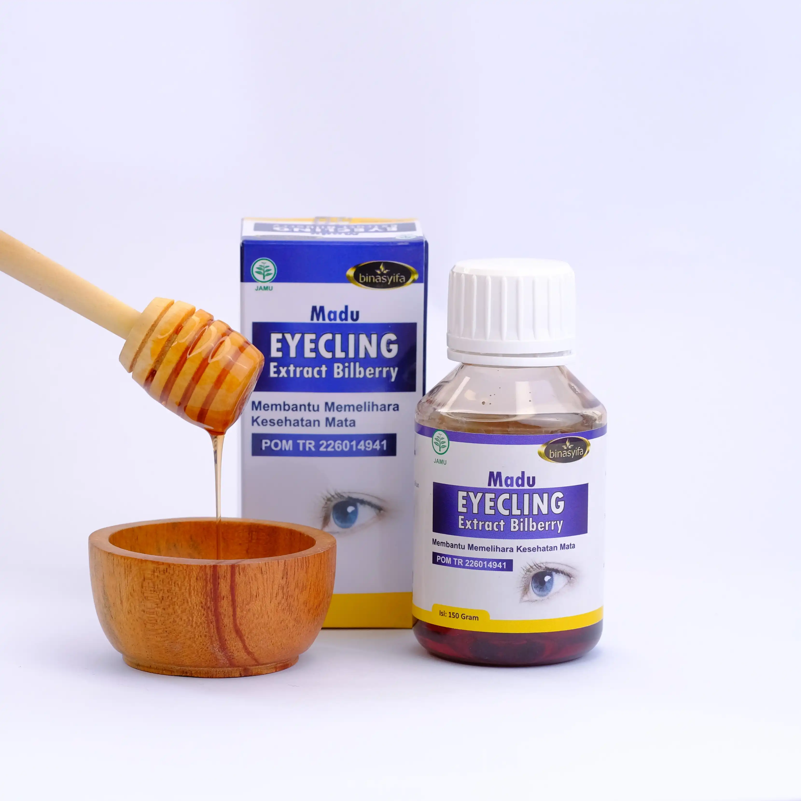

EYECLING
Madu Ekstrak Bilberry
Solusi Alami untuk Kesehatan Mata Anda
Membantu Memelihara Kesehatan Mata, Mengatasi Mata Minus, Plus, Silinder, Buram, dan Mencegah Katarak dengan Formula Herbal Berkualitas Tinggi.
TERDAFTAR BPOM
POM TR 226014941
